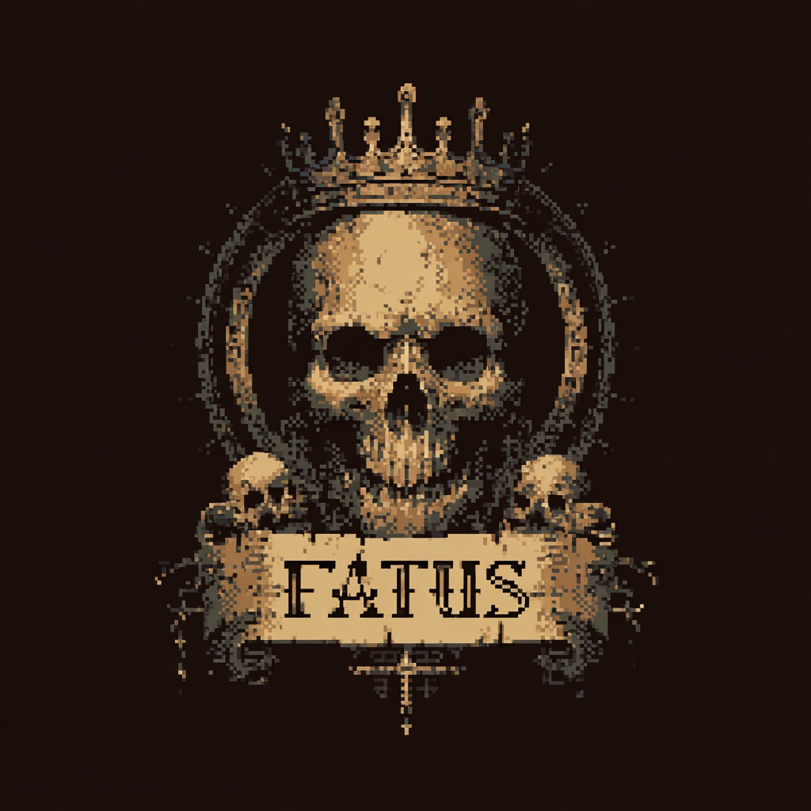

Un juego sobre deicisiones y el peso de estas en el transcurso de tu vida
Pruéebalo aquíFatus es un simulador de vida que desafía tu destino. Desde tu nacimiento hasta tu último suspiro, cada decisión marca el camino que recorrerás. Desliza cartas, elige tu destino y descubre cómo tus acciones moldean tu karma.
Versión alpha — Windows y Web
Descargar para Windows Jugar en el navegador